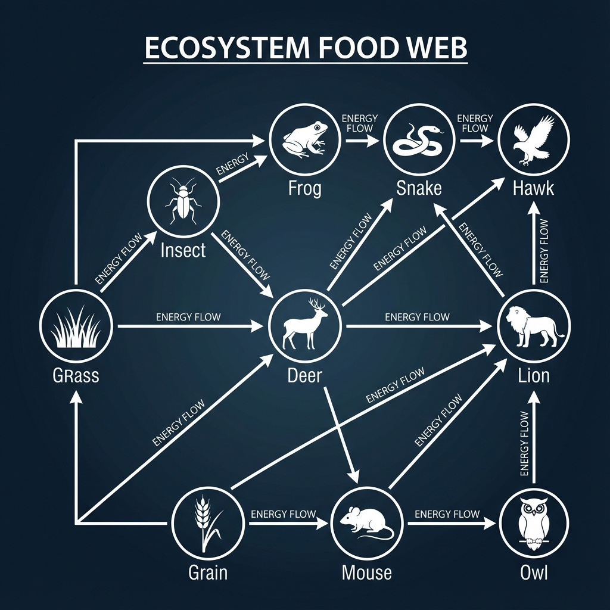
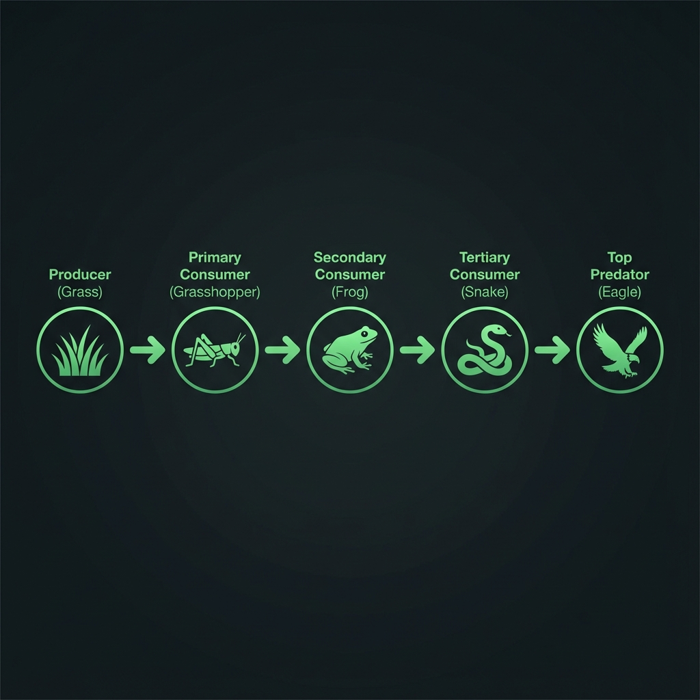
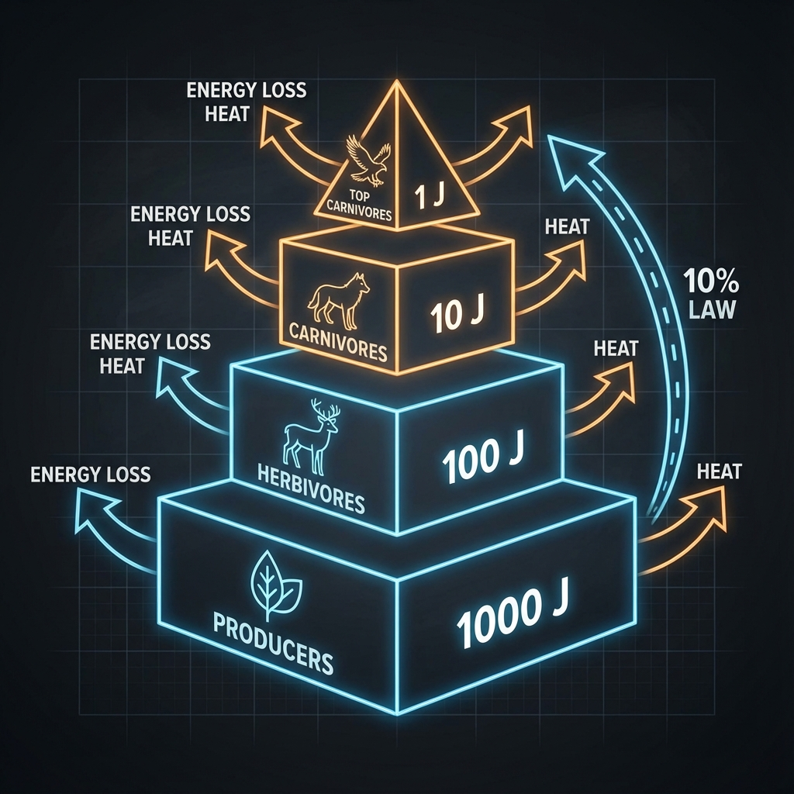
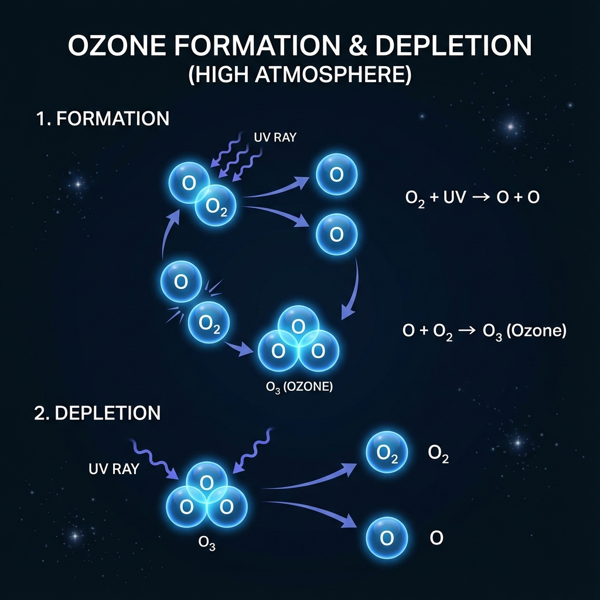

Our Environment
Understand the delicate balance of ecosystems, how energy flows through food chains, and how our
actions affect the planet.

At a Glance
- Ecosystem: Interaction of Biotic & Abiotic.
- Energy Flow: Unidirectional (10% Law).
- Ozone Layer: Shields Earth from UV.
- Waste Management: Reduce, Reuse, Recycle.
13.1 Ecosystem
What is an Ecosystem?
A self-sustaining unit where living organisms interact with their non-living
environment.
Components
An ecosystem consists of two main components interacting with each other.
| Abiotic (Non-living) |
Biotic (Living) |
| Temperature, Rainfall, Wind, Soil, Minerals |
Plants, Animals, Microorganisms |
Types of Ecosystems
- Natural: Forests, Ponds, Lakes (Operate naturally).
- Artificial: Gardens, Crop-fields, Aquariums (Man-made, require
maintenance).
ACTIVITY 13.1 (AQUARIUM)
Aquariums need regular cleaning because they lack
natural decomposers to break down waste, unlike natural ponds.
Roles of Organisms
Producers
Autotrophs (Green plants, Blue-green algae) that make food using
sunlight.
Consumers
Heterotrophs that eat others. Herbivores, Carnivores, Omnivores,
Parasites.
Decomposers
Bacteria & Fungi that break down dead organic matter. Vital for nutrient
cycling.
13.1.1 Food Chains & Webs
Energy Flow
How energy moves from producers to top consumers.
Food Chain
A series of organisms feeding on one another.

- Unidirectional: Energy always flows from Sun → Producer → Consumer.
- It cannot flow backwards.
10% Law
Only ~10% of energy is transferred to the next trophic level. The rest (90%) is lost as heat.

Limit: Because energy decreases at each step, food chains rarely have more than
3-4 trophic levels.
Biological Magnification
Harmful chemicals (like pesticides/DDT) enter the food chain and are not broken down.
- They accumulate vertically at each trophic level.
- Top Level Effect: Humans, being at the top, accumulate the maximum
concentration.
Why Wash Vegetables?
To remove surface pesticides, though some may
have already entered the plant tissues.
13.2 Our Altered Environment
Environmental Impact
Global problems caused by human activities.
Ozone Layer Depletion
Ozone (O₃) shields the earth from UV radiation. UV causes skin cancer.

| Cause |
CFCs (Chlorofluorocarbons) used in refrigerants. |
| Solution |
Montreal Protocol (1987): froze CFC production. |
Managing Garbage
Garbage disposal is a major problem affecting our environment. lifestyle improvements have
resulted in the accumulation of large amounts of waste.
(a) Biodegradable Wastes
Substances which can be
decomposed by the action of micro-organisms.
- Fruit/veg peels, cotton, jute, dung, paper.
(b) Non-Biodegradable Wastes
Substances which
cannot be decomposed by micro-organisms.
- Plastics, polythene, metals, synthetic fibers, pesticides.
Methods of Waste Disposal
-
(a) Biogas
Plant
Biodegradable waste is used to produce biogas and manure.
-
(b) Sewage Treatment
Plant
Drain water is cleaned before adding it to rivers.
-
(c) Land
Fillings
Wastes are buried in low-lying areas and compacted with bulldozers.
-
(d)
Composting
Organic wastes types in compost pit → covered with soil → Manure (3 months).
-
(e)
Recycling
Non-biodegradable wastes are processed to make new items.
-
(f) Reuse
Using an item again (e.g., newspaper for envelopes).
-
(g)
Incineration
Thermal treatment converting medical waste into ash.
Ready to apply this knowledge?
Check out the interactive activities to see how aquariums work and how to track the ozone layer.
Go to Activities →